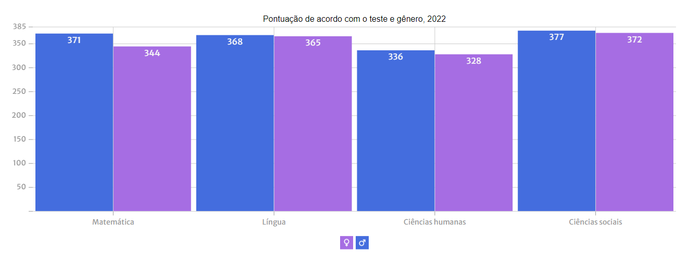
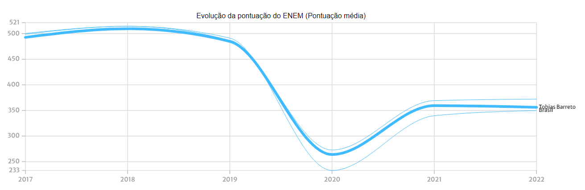
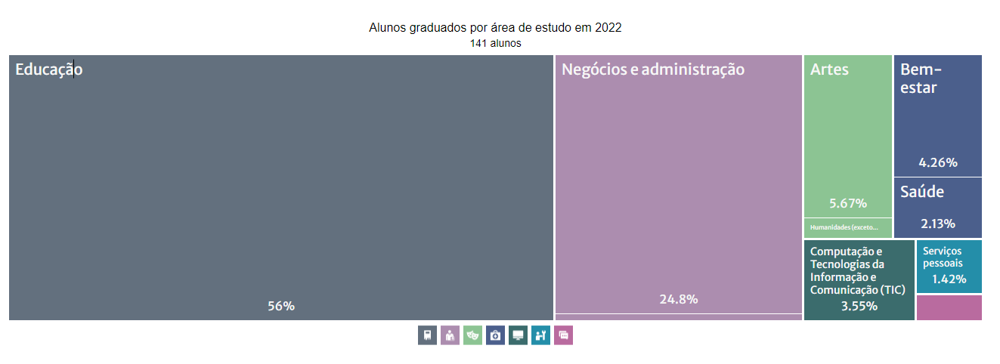
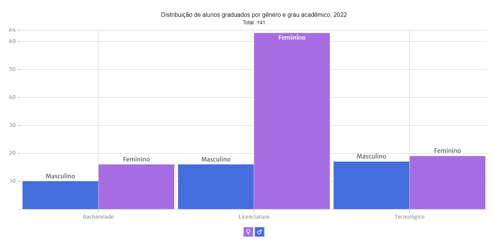

Blog Tobias
Blog Tobias @blogtobias
@blogtobias Blog Tobias
Blog TobiasEducação - Senac de Tobias Barreto abre vagas gratuitas para curso de “Costura: técnicas de acabamento”
Cursos gratuitos
Senac - SE /O Senac investe, desde 2014, 66,67% de sua Receita Líquida de Contribuição.O Centro de Educação Profissional (CEP) de Tobias Barreto está com vagas gratuitas abertas para curso “Costura: técnicas de acabamento”, em parceria com a empresa VestMed, situada no Distrito Industrial do município. São 15 vagas, que estão sendo ofertadas por meio do Programa Senac de Gratuidade (PSG) que, somente no primeiro quadrimestre deste ano, já abriu 215 turmas em diversos cursos.
Dados fornecidos por Portal Tobiense - Adissandro Pinheiro, publicado 1 mês atrás.
Educação - Nível dos estudantes que fizeram o ENEM em Tobias Barreto
Pontuação ENEM
Período de 2022 / Categoria - Gênero.Em 2022, a pontuação média do ENEM na cidade de Tobias Barreto foi de 356 pontos. As notas médias obtidas por tipo de prova na cidade de Tobias Barreto foram 354 pontos em matemática, 366 pontos em língua, 331 pontos em ciências da natureza e 374 pontos em ciências sociais.
Dados fornecidos por Instituto Nacional de Estudos e Pesquisas Educacionais Anísio Teixeira (INEP).
Evolução da pontuação do ENEM
Munícipio Tobias Barreto / Prova - Pontuação média.Em 2022, a pontuação média do ENEM na cidade de Tobias Barreto foi de 356 pontos (3.29 pontos a menos que no ano anterior). Um valor bem abaixo do espera pelo munícipio, porém não distante da realidade.
Dados fornecidos por Instituto Nacional de Estudos e Pesquisas Educacionais Anísio Teixeira (INEP).
Educação - Situação dos estudantes graduados em Tobias Barreto
Educação superior
Alunos graduados / Período - 2022.Em 2022, na cidade de Tobias Barreto registrou 141 alunos graduados. As áreas de estudo com mais aluno graduados na cidade de Tobias Barreto foram Educação (79 alunos), Negócios e administração (35 alunos), e Artes (8 alunos).
Dados fornecidos por Instituto Nacional de Estudos e Pesquisas Educacionais Anísio Teixeira (INEP).
Alunos por gênero e grau acadêmico
Alunos graduados / Período - 2022 / Administração - Privada com fins lucrativos.Em 2022, foram graduados 141 alunos na cidade de Tobias Barreto, sendo 69.5% mulheres e 30.5% homens (o acima considerando todos os tipos de administração). No mesmo ano, foram matriculados na cidade de Tobias Barreto 79 alunos de Licenciatura, 36 alunos de Tecnológico, e 26 alunos de Bacharelado.
Dados fornecidos por Instituto Nacional de Estudos e Pesquisas Educacionais Anísio Teixeira (INEP).
